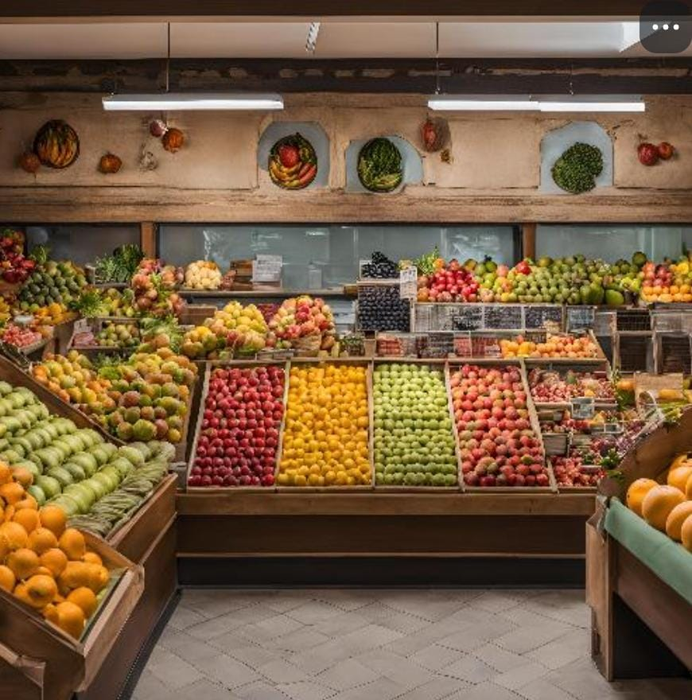

jogo ensino médio
O projeto Jogo Prova foi um desafio emocionante que me permitiu explorar as possibilidades do CSS. Criei um jogo de perguntas e respostas.
jogo fruteira
O projeto lojinha foi um desaf do CSS. Criei uma loja virtual moderna, com uma interface intuitiva e atraente. O resultado final foi uma loja virtual funcional e visualmente atraente.
jogo fruteira embelezada

No projeto Lojinha Embelezada eu adicionei cores para dar um toque de personalidade à loja. O resultado final foi uma loja virtual que não apenas é funcional, mas também visualmente atraente e alegre!